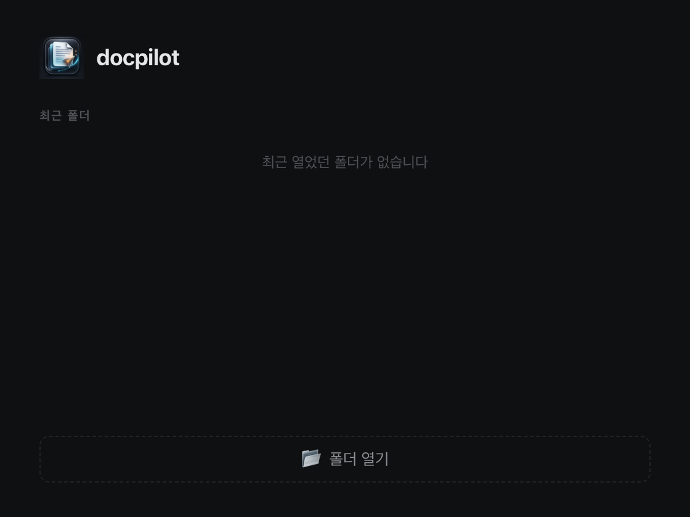
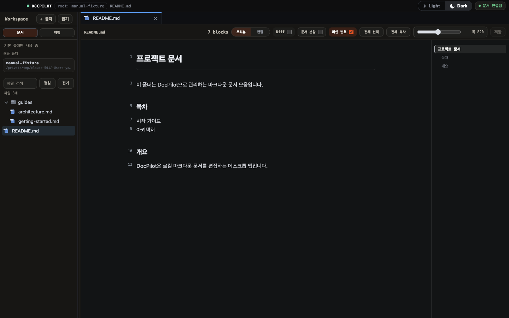
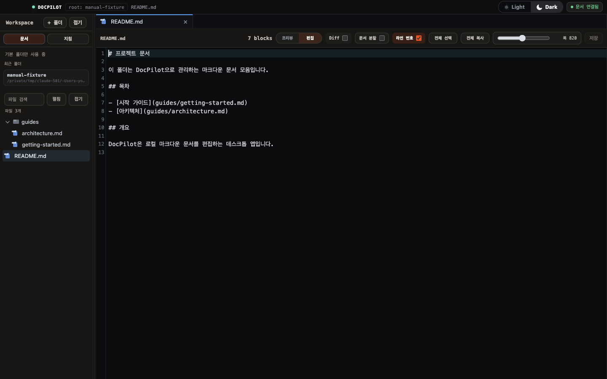
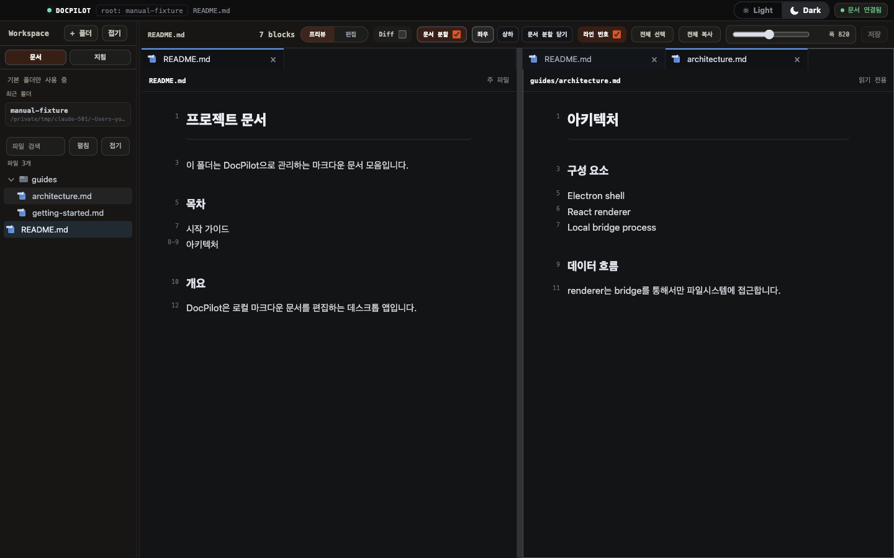
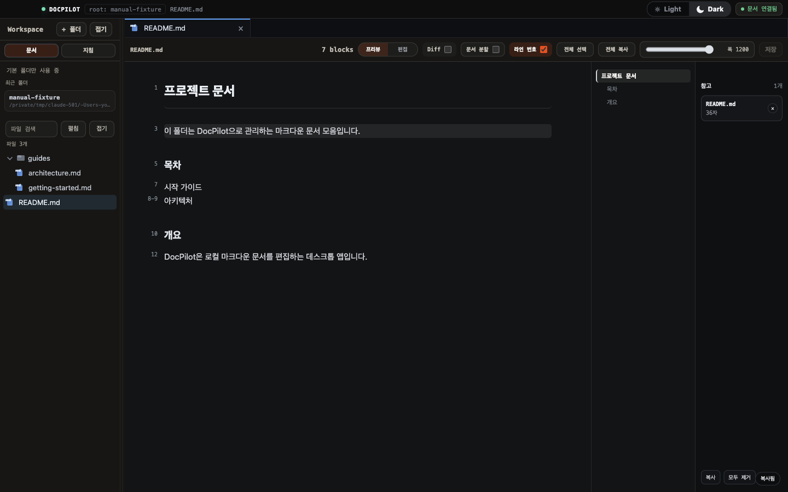
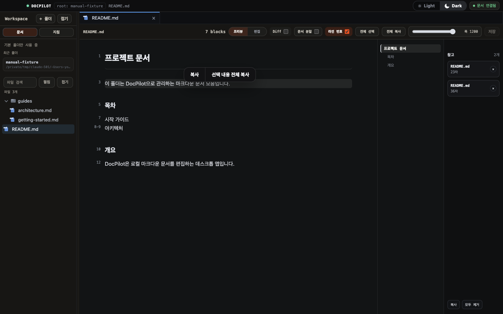
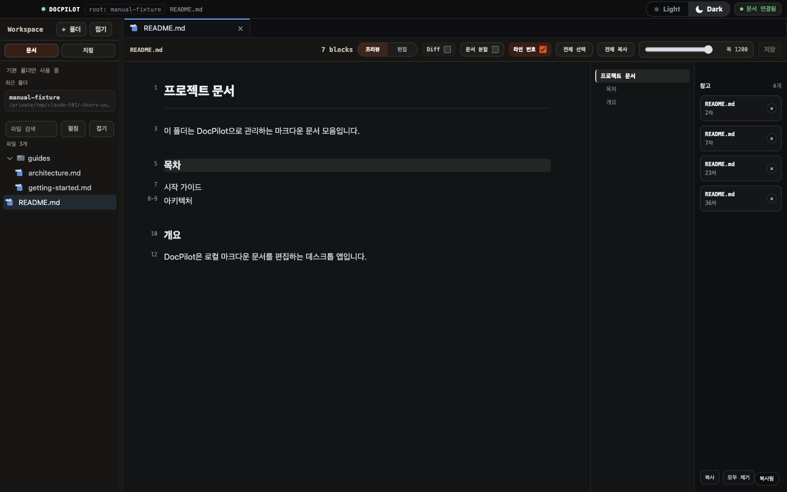
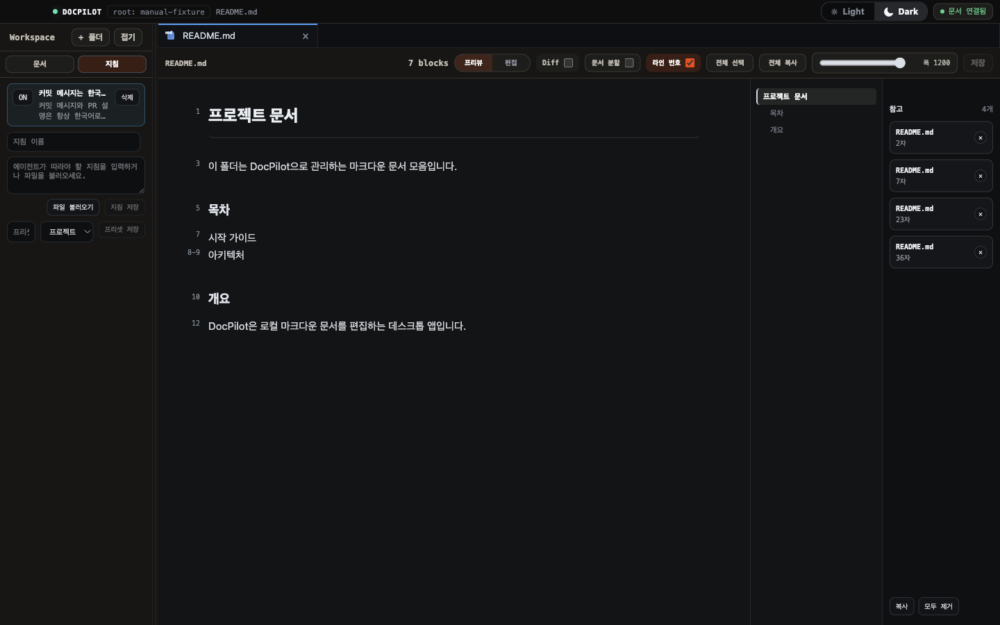

DocPilot 사용 매뉴얼
로컬 마크다운 문서를 프리뷰·스플릿·diff로 보고, 지침을 걸어두고, 필요한 부분을 클릭하거나 드래그하면 File: 경로 + Lines: N-M + 내용이 그대로 복사됩니다. 터미널의 Claude Code나 Codex에 붙여넣기만 하면 됩니다 — 파일 위치를 직접 찾아 알려줄 필요가 없습니다.
1.0.25 → 1.0.27 변경사항
최근 세 버전에서 문서 검토, Diff 확인, 편집기, 지침 관리 흐름이 어떻게 바뀌었는지 정리했습니다.
DocPilot 1.0.27
현재 버전- 01들여쓰기 선택지를 간단하게 정리했습니다
상단 Tab 메뉴와 명령 팔레트에서 스페이스 2칸, 스페이스 4칸, 탭 2칸, 탭 4칸을 바로 선택할 수 있습니다.
- 02JSON과 JavaScript 파일을 작업할 수 있습니다
파일 트리, 빠른 이동, 편집기에서 JSON과 JavaScript 파일을 열고 수정할 수 있습니다. JSON은 보기 모드에서 읽기 좋게 정렬해 보여줍니다.
- 03프리뷰는 Markdown과 JSON에 집중했습니다
JavaScript, YAML, 일반 텍스트 파일은 기본적으로 편집 모드로 열립니다. 프리뷰가 어울리는 문서와 데이터 파일에만 프리뷰 전환을 제공합니다.
- 04편집기 색과 배경을 다시 맞췄습니다
다크 테마 편집 배경을 덜 진하게 조정하고, 편집 모드 코드 색상을 프리뷰 코드블록과 더 가깝게 맞췄습니다.
- 05들여쓰기 영역을 눈으로 확인할 수 있습니다
선행 공백과 탭이 화면에 구분되어 보여, 파일마다 어떤 들여쓰기 기준을 쓰는지 편집 중 바로 확인할 수 있습니다.
DocPilot 1.0.26
검색 · 창 · 보기- 01새 창이 기존 프로젝트를 끊지 않습니다
새 창에서 다른 폴더를 열어도 기존 창의 프로젝트와 브리지가 그대로 유지됩니다.
- 02검색창을 찾기 중심으로 줄였습니다
프리뷰와 편집 모드의 Cmd+F 창을 더 작게 정리하고, 다른 영역을 클릭하면 닫히도록 했습니다.
- 03본문 폭 기본값을 넓혔습니다
프리뷰 본문 폭은 처음부터 최대로 열리고, 슬라이더 트랙을 클릭해 바로 조절할 수 있습니다.
- 04라이트 테마 코드블록을 보정했습니다
라이트 테마에서도 네이비 코드블록 안의 타입, 함수명, 매개변수가 잘 보이도록 색을 다시 맞췄습니다.
DocPilot 1.0.25
Diff · 지침 · 복사- 01작은 Diff만 보이게 했습니다
표 한 줄이나 목록 한 항목만 바뀐 경우, 그 부분만 빨강/초록으로 표시합니다. 문서 전체가 바뀐 것처럼 보이던 화면을 줄였습니다.
- 02긴 문서에서 변경 위치를 먼저 볼 수 있습니다
Diff 오른쪽 레일에 변경 지점이 표시됩니다. 레일을 보고 어디쯤을 확인해야 하는지 파악한 뒤 스크롤하면 됩니다.
- 03라이트 테마 Diff를 다시 맞췄습니다
줄 번호 색을 낮추고, 편집 모드 raw diff의 배경과 글자색을 조정했습니다. 밝은 화면에서도 삭제/추가 줄을 구분할 수 있습니다.
- 04지침 프리셋이 현재 상태를 따라갑니다
지침을 끄거나 삭제하면 활성 프리셋 표시도 함께 정리됩니다. 파일에서 불러온 지침은 복사나 에이전트 요청 전에 최신 내용을 다시 읽습니다.
- 05프리뷰 복사 동작을 분리했습니다
문단을 클릭하면 바로 참고 칩에 추가하고 복사합니다. 드래그로 범위를 잡았을 때만 선택 복사 메뉴가 열립니다.
배포 & 다운로드
현재 배포된 DocPilot 앱은 v1.0.27입니다. macOS에서는 DMG를 내려받아 기존 앱에 덮어 설치하면 됩니다.
Download
⬇️최신 macOS DMG
아래 버튼은 GitHub Release의 최신 DocPilot-1.0.27.dmg 자산으로 연결됩니다.
Install
🧩설치 방법
DocPilot-1.0.27.dmg를 내려받는다- DMG를 열고 DocPilot.app을 Applications 폴더로 드래그한다
- 기존 앱이 있으면 대체 설치한다
- 앱을 다시 열면 v1.0.27 개선사항 안내가 처음 한 번 표시된다
Release Assets
📦배포 자산
폴더 열기 & 편집 → 저장 워크플로우
문서 폴더를 선택하는 순간부터 저장까지 이어지는 전체 흐름을 정리합니다.
Start
📂폴더 열기
시작 화면에서 로컬 마크다운 폴더를 선택하면 나머지는 자동으로 이어집니다.

- 시작 화면에서 폴더 열기를 누른다
- 편집할 마크다운 문서가 있는 로컬 폴더를 선택한다
- DocPilot이 해당 경로를 workspace root로 지정하고 bridge 프로세스를 그 경로 기준으로 띄운다
- React editor 창이 자동으로 열린다
산출물
📌폴더를 열면 만들어지는 것
- workspace root. 선택한 폴더 경로가 이후 모든 파일 조회의 기준이 된다.
- 최근 작업공간 기록. 연 폴더가 시작 화면의 최근 폴더 목록에 자동으로 남는다.
권장 루프
🔁편집 사이클
파일을 열고 고치고 저장하는 흐름은 짧게 반복됩니다.
- 파일 트리에서 문서를 연다
- CodeMirror 에디터에서 수정한다
⌘S/Ctrl+S로 저장한다 (수정 상태일 때만 동작)- 프리뷰에서 렌더링 결과를 확인하고 필요하면 다시 수정한다
실제 사례
💡새 문서를 만들어 저장하기
파일 트리를 우클릭해 파일 만들기로 새 문서를 추가하고, 내용을 작성한 뒤 ⌘S로 저장하면 즉시 디스크에 반영됩니다. 저장 전 상태는 상단에 "저장 안 됨"으로 표시됩니다.
파일 트리
Workspace Sidebar는 선택한 폴더 하위의 마크다운 문서를 트리 구조로 보여줍니다.
Start
🗂️탐색
- 폴더와 파일을 트리에서 펼치고 클릭해 연다
- 검색창에 이름을 입력해 파일을 좁혀 찾는다
- 펼침 / 접기 버튼으로 트리 전체를 한 번에 열고 닫는다

비교
🖱️우클릭 메뉴 — 대상별로 다르다
트리를 우클릭하면 대상(빈 영역/폴더/파일)에 따라 다른 메뉴가 뜹니다.
| 대상 | 사용 가능한 메뉴 |
|---|---|
| 빈 영역 | 파일 만들기, 폴더 만들기, 워크스페이스 추가, Finder에서 열기 |
| 폴더 | 파일 만들기, 폴더 만들기, 이름 바꾸기, 폴더 삭제, Finder에서 열기, 경로 복사 |
| 파일 | 분할로 열기, 파일 만들기, 이름 바꾸기, 파일 삭제, Finder에서 위치 열기, 경로 복사 |
권한/제한
🔐접근 경계
산출물
🕒최근 폴더
최근에 열었던 작업 폴더 목록을 기록해 다음 실행 때 바로 이어서 작업할 수 있습니다.
실제 사례
💡새 폴더를 만들고 문서를 정리하기
빈 영역을 우클릭해 폴더 만들기로 하위 폴더를 만들고, 그 폴더를 다시 우클릭해 파일 만들기로 문서를 추가합니다. 이름을 잘못 지었다면 이름 바꾸기로 바로 고칠 수 있습니다.
Markdown 편집기
CodeMirror 6 기반 에디터와 markdown-it 프리뷰를 함께 제공합니다.
Start
📝편집 · 미리보기
- CodeMirror 6 기반 Markdown 문법 하이라이트로 편집한다
- markdown-it 기반 프리뷰가 수정 즉시 렌더링 결과를 반영한다

비교
⚖️분할 보기 옵션
두 번째 문서를 열어 나란히 비교(compare)할 수 있고, 분할 방향을 고를 수 있습니다.

| 옵션 | 동작 |
|---|---|
| 가로 분할 | 두 문서를 좌우로 나란히 배치 |
| 세로 분할 | 두 문서를 위아래로 배치 |
권한/제한
⚠️충돌 감지
⌘S)는 편집 모드에서 수정된 상태일 때만 동작한다.권장 루프
⌨️단축키
⌘S/Ctrl+S— 현재 파일 저장⌘F/Ctrl+F— 프리뷰 모드에서 찾기 창 열기
실제 사례
💡두 문서를 비교하며 편집하기
분할 보기를 켜고 두 번째 문서를 연 뒤, 방향을 가로/세로로 바꿔가며 원본과 새 문서를 나란히 보고 옮겨 적습니다. 편집 중이던 파일에 리뷰 대기 중인 변경이 있으면, diff 토글로 저장 전/후 내용을 바로 비교할 수 있습니다.
복사해서 Agent에게 전달
프리뷰에서 클릭하거나 드래그하면 파일 위치, 라인 번호, 내용이 함께 클립보드에 복사됩니다. 여기서 말하는 Agent는 터미널에서 따로 띄운 Claude Code나 Codex 같은 외부 CLI 세션입니다 — 앱 내장 기능이 아닙니다.
Start
👆클릭 한 번으로 복사
프리뷰에서 문단·리스트·표·코드블록 같은 블록을 클릭하면 즉시 클립보드에 복사되고 우측 하단에 "복사됨" 표시가 뜹니다.

복사되는 형식은 항상 같습니다.
File: guides/architecture.md
Lines: 5-7
(선택한 내용)비교
🖱️클릭 vs 드래그
블록 전체가 필요하면 클릭, 블록 중 일부만 필요하면 드래그로 범위를 고릅니다.

| 동작 | 결과 |
|---|---|
| 블록 클릭 | 블록 전체를 즉시 복사, "복사됨" 표시 |
| 드래그 선택 | 선택한 범위만 팝오버로 확인 후 "복사" 또는 "선택 내용 전체 복사" |
산출물
🗂️여러 개 모아서 한 번에 복사
클릭·드래그로 고른 내용은 우측 참고 목록에 chip으로 쌓입니다. 하나씩 복사하지 않고 모아뒀다가 한 번에 복사할 수 있습니다.

- 복사. 쌓인 항목 전체를 한 번에 클립보드로 복사한다
- 모두 제거. 참고 목록을 비운다
- chip의
×로 항목을 하나씩 뺄 수 있다
권한/제한
실제 사례
💡파일 위치를 몰라도 되는 이유
마크다운 문서의 특정 문단을 Agent에게 고쳐달라고 할 때, 예전에는 몇 번째 줄인지 직접 찾아서 알려줘야 했습니다. 지금은 프리뷰에서 그 문단을 클릭만 하면 File 경로와 Lines 번호가 이미 붙은 채로 복사되므로, 터미널의 Agent 세션에 붙여넣기만 하면 됩니다.
지침(Instructions) 관리
Agent에게 항상 전달할 규칙을 등록해두면, 복사할 때마다 자동으로 함께 붙습니다.
Start
➕지침 추가
- 왼쪽 지침 탭으로 전환한다
- 지침 이름과 본문을 입력하거나, 파일 불러오기로
.md/.txt/.yaml파일 내용을 채운다 - 지침 저장을 누르면 목록에 추가되고 바로 활성(ON) 상태가 된다

비교
⚖️개별 지침 vs 프리셋
| 단위 | 동작 |
|---|---|
| 개별 지침 | ON/OFF 버튼으로 즉시 켜고 끈다. 켜진 지침만 복사 시 포함된다. |
| 프리셋 | 저장 시점에 켜져 있던 지침들을 프로젝트/전역 범위로 묶어 저장. 적용 버튼으로 그 조합을 한 번에 전환한다. |
권한/제한
산출물
🔢활성 지침 표시
- 지침 탭 상단에 N active로 현재 켜진 지침 개수가 표시된다
- 켜진 지침은 복사해서 Agent에게 전달할 때마다 텍스트 맨 앞에 이름과 함께 자동으로 나열된다
실제 사례
💡매번 다시 설명하지 않기
"커밋 메시지는 한국어로" 같은 규칙을 지침으로 저장해두면, 이후 프리뷰에서 아무 내용이나 클릭·드래그로 복사할 때마다 이 규칙이 맨 위에 자동으로 붙습니다. Agent에게 매번 다시 설명할 필요가 없습니다.
Safety Model
DocPilot은 renderer(React UI)와 파일시스템 접근을 분리해 예기치 않은 파일 손상을 막습니다.
권한/제한
🔒권한 경계
- renderer — React 화면. 파일시스템/프로세스 권한이 없다.
- bridge — Electron 메인 프로세스. 파일 조회·생성·삭제를 대신 수행한다.
- workspace root guard — 열린 폴더 밖의 경로 접근을 막는다.
산출물
📦패키징 범위
- 패키지에는 React renderer만 포함되며 legacy browser editor는 제외한다
실제 사례
💡외부에서 파일이 바뀌었을 때
편집 중인 문서를 다른 프로그램(예: 텍스트 편집기, git checkout)이 건드리면 DocPilot은 그 변경을 자동으로 덮어쓰지 않습니다. 대신 conflict 리뷰로 표시해, 디스크의 변경 내용을 확인한 뒤 사용자가 직접 반영 여부를 결정하게 합니다.
검증 명령
변경 사항을 커밋하기 전에 아래 스크립트로 renderer 빌드, 타입, 핵심 흐름을 확인합니다.
Start
npm run renderer:typecheck
npm run renderer:build
node scripts/check-core-modules.js
node scripts/check-prompt-package.js
node scripts/check-agent-session-bridge.js
node scripts/check-fake-agent-session.js
node scripts/check-project-chat-wrapper.js
node scripts/check-terminal-session.js
node scripts/check-react-renderer-smoke.js
node scripts/check-react-editor-workflow.js
node scripts/check-react-external-conflict.js
node scripts/check-editor-navigation-guard.js
node scripts/check-packaged-app.js산출물
🔍각 스크립트가 확인하는 것
renderer:typecheck— TypeScript 타입 오류 검사renderer:build— Vite 프로덕션 빌드 성공 여부check-core-modules.js— context mode 계산 유틸리티 단위 테스트check-prompt-package.js— 세션 프롬프트 패키지 빌드 로직 검증check-agent-session-bridge.js— 세션 브릿지 IPC 동작 검증check-fake-agent-session.js— 가짜 세션으로 브릿지 흐름 검증check-project-chat-wrapper.js— 프로젝트 챗 래퍼 동작 검증check-terminal-session.js— 터미널 세션 생성·입출력 이벤트 검증check-react-renderer-smoke.js— Playwright로 렌더러 기동 스모크 테스트check-react-editor-workflow.js— 파일 열기·편집·저장 E2E 테스트check-react-external-conflict.js— 외부 파일 변경 시 conflict 리뷰 표시 검증check-editor-navigation-guard.js— 프리뷰 링크 클릭 시 앱 셸 밖으로 이동하지 않는지 검증check-packaged-app.js— 패키징된 DMG/앱 리소스 존재 여부 검증
권장 루프
위 순서 그대로 실행합니다. 타입/빌드 오류부터 잡고, 단위 테스트 → E2E → 패키징 검증 순으로 좁은 범위에서 넓은 범위로 넘어갑니다.
실제 사례
💡실패했을 때
스크립트 하나가 실패하면 그 지점에서 멈추고 원인을 고친 뒤, 처음부터 다시 전체 목록을 실행합니다. 뒷단(E2E, 패키징) 스크립트는 앞단(타입, 단위 테스트)이 깨진 상태에서는 신뢰할 수 없습니다.
위 스크립트를 모두 통과해야 커밋합니다.